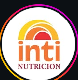

Centro de nutrición integral
Inti Nutrición es un consultorio de nutrición con un equipo de profesionales que te acompaña en obesidad, deporte, alimentación veggie, familia y niñez. Atención cercana, con tiempo para escucharte y explicarte cada paso.
Un solo lugar para cuidar tu alimentación, con distintas especialidades y programas.
Atención nutricional personalizada para adultos, con foco en obesidad y en construir hábitos que se sostengan en el tiempo.
Planes para quienes entrenan, y asesoramiento a clubes y equipos.
Acompañamiento para una alimentación vegetariana o vegana, bien equilibrada.
Consultas para niños, adolescentes y toda la familia, con explicaciones claras y didácticas.
Turnos con especialistas, para trabajar tu salud junto con tu alimentación.
Programa Detox y grupo de adelgazamiento, para transitar el cambio acompañado.
También: antropometría · viandas (Inti Cheff) · suplementos · Inti Psico
No se trata solo de bajar de peso: se trata de una vida saludable, con tiempo y escucha en cada consulta.
Escribinos y coordinamos tu consulta con el profesional que necesites.
11 6659-2414
Hipólito Yrigoyen 293, 2.º piso A, Belén de Escobar
@intinutricion
Los botones de contacto se activan cuando arrancamos con la versión oficial.